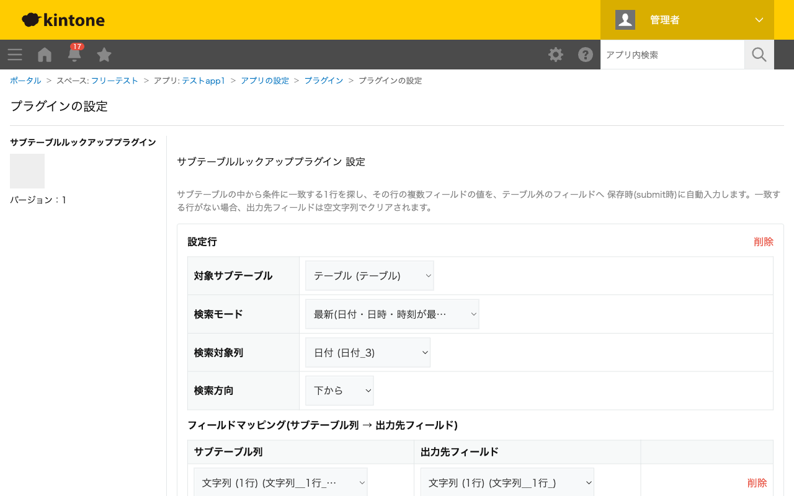

GovAppsプラグイン 安全性を確認できる無料kintoneプラグイン集
サブテーブルの中から条件に一致する1行を探し、その行の複数フィールド(列)の値を、テーブル外の フィールドへ保存時(submit時)に自動入力します。点検履歴などをサブテーブルで管理し、「最新の点検結果」 「最終点検日」「特定条件に合う行の値」をテーブル外のフィールドへ反映する用途を想定しています。
設備の点検履歴をサブテーブルで管理しているアプリで、検索モードを「最新」にして点検日列を指定すると、点検日が最も新しい行の結果・点検日をテーブル外のフィールドへ自動反映できます。一覧画面やカスタマイズビューで「現在の状態」をひと目で確認できるようになります。
点検日が同値の行が複数ある場合は、検索方向(上から/下から)で採用する行を決められます。「下から」を選べば、同日内で最後に入力された行が採用されます。
「区分」列が「異常」と完全一致する行を探し、その対応内容を別フィールドへ転記する、といった使い方ができます。一致する行がない場合、出力先フィールドは常に空文字列でクリアされるため、古い値が残ったままになる事故を防げます。
出力先フィールドはプラグインが常に上書きします(一致行がない場合は空文字列でクリア)。手入力欄としては使えません。
kintoneセキュアコーディングガイドラインに沿って実装時にチェックしています。特に重要な点は次のとおりです。
textContentまたはcreateElementで行っており、innerHTMLへの外部由来文字列の差し込みはありません。String#includes/===)にのみ使われ、DOMへ描画されることはありません。詳細な確認項目・確認日は下記GitHubのチェックリストに全項目を掲載しています。

このプラグインはREST APIを一切実行しません。フィールド情報の取得はkintone.app.getFormFields()のみで行い、
検索・転記処理はsubmitイベント内のローカルな処理のみで完結します。API実行数制限に影響することはありません。